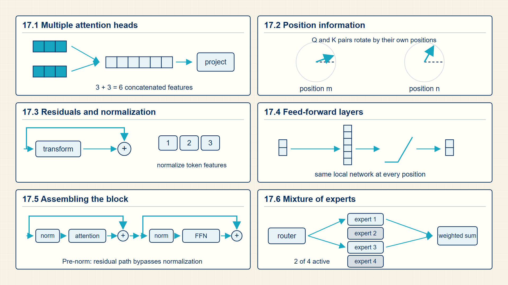
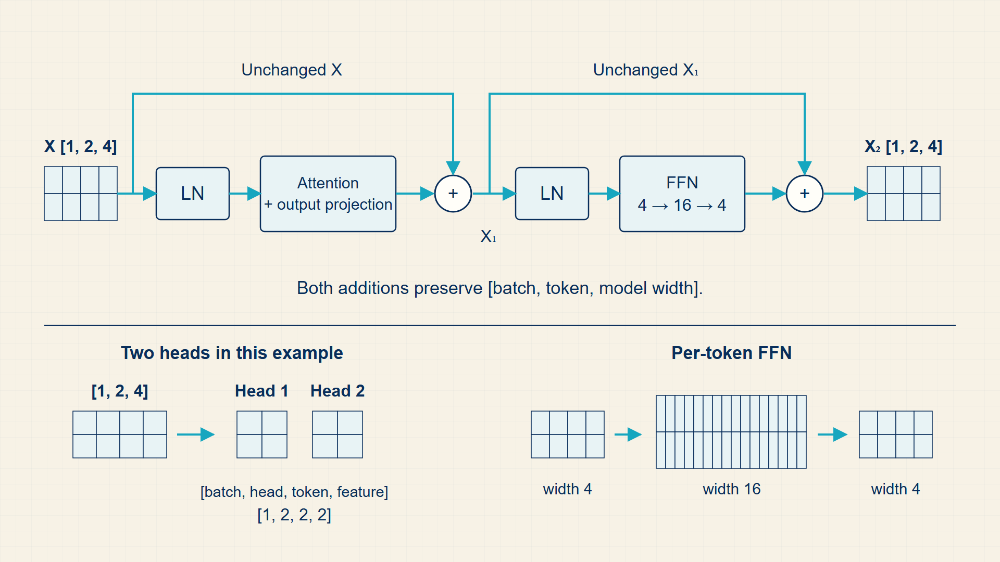
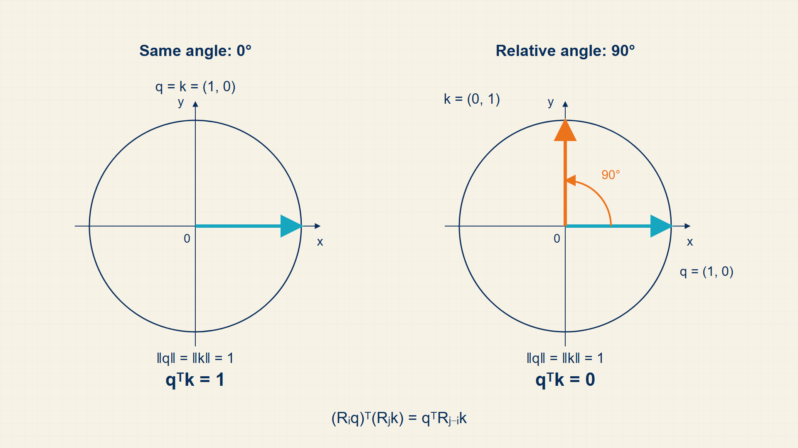
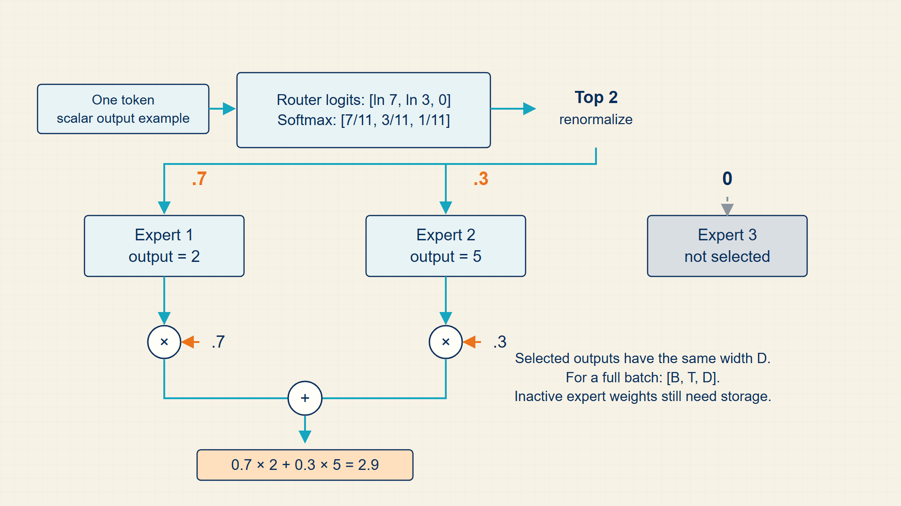

17 Transformer Blocks: Building Deep, Order-Aware Networks
Attention mixes information across token positions, but a useful deep model needs more than the attention calculation alone. A transformer block adds position information, residual paths, normalization, and per-token feature transformations.
A transformer block packages attention with residual connections, normalization, position information, and a feed-forward transformation. Repeating the block lets each token representation gather and refine context across many layers.
In code, torch.nn.MultiheadAttention, LayerNorm, linear layers, and dropout correspond to transformer-block components; transformers supplies pretrained implementations of the same architecture.
Chapter 17 develops one required stage of the guide’s computation.

The numbered panels correspond to the chapter sections and show how each local result supplies the next operation.
17.1 Stacking Multi-Head Attention and SwiGLU Feed-Forward Blocks
A transformer block updates every token representation by combining self-attention with a position-wise feed-forward network. The block is repeated many times to build depth.
- Transformer block: A stack unit containing attention, feed-forward layers, normalization, and residual connections.
- Feed-forward network: A per-token multilayer network applied independently to each position.
- Depth: The number of repeated transformer blocks.
- Token mixing: Using attention to combine information across token positions.
- Per-token transformation: Applying the same feed-forward network independently to each token vector.
Attention mixes information across positions. The feed-forward network transforms each mixed representation. Repetition lets the model build increasingly abstract contextual features.
Although the architecture is often described as all attention, the feed-forward layers contain a large share of parameters and compute in many transformers.
A complete layer keeps the batch, sequence, and model-width axes while changing the values stored at each position. Multi-head attention mixes information across positions; the feed-forward network then transforms each position independently. Residual additions require matching dimensions, which is why attention and feed-forward outputs are projected back to the model width.
Dropout is active during training and disabled during evaluation. It randomly removes selected activation contributions before residual or feed-forward calculations, which changes the sampled training computation without changing the inference graph’s dimensions.
The layer has two distinct jobs. Attention moves information between positions, so a token can use evidence from other tokens. The feed-forward network does not move information between positions; it transforms each token vector using the same learned weights.
Residual additions preserve the tensor dimensions and let the block learn a change to the incoming representation. This is why every sublayer must project its output back to the model width D before it is added to the residual stream.
A transformer layer alternates token mixing and per-token transformation, with a residual addition after each operation.
Transformer layer flow:
\[ \begin{aligned}X_1&=X+\operatorname{Attention}(\operatorname{LN}(X)),\\X_2&=X_1+\operatorname{FFN}(\operatorname{LN}(X_1))\end{aligned} \tag{17.1}\]
where X is input token tensor with dimensions [B,T,D]; LN is layer normalization applied to each token vector; Attention is cross-token mixing operation; FFN is per-token feed-forward operation.
Attention changes each token by reading other visible tokens. The residual adds that change to the input. The feed-forward network then changes each resulting token independently and adds its residual change.
Both \(X_{1}\) and \(X_{2}\) retain the same batch, sequence, and model-width dimensions as X.
Example: Following dimensions through one transformer layer
Use a batch with \(B=1\), sequence length \(T=2\), model width \(D=4\), and \(H=2\) attention heads of width \(d_h=2\).
Input and projections:
X has dimensions [1,2,4]
Q, K, and V each have dimensions [1,2,4]
Head split:
Reshape Q, K, and V to [1,2,2,2]
Permute to [1,2,2,2] with axes [batch, head, token, head width], where the head width is \(d_h\).
Attention output:
Each head returns [1,2,2,2]
Concatenating heads restores [1,2,4]
Residual and feed-forward:
The attention residual remains [1,2,4]
An FFN can expand [1,2,4] to [1,2,16] and project back to [1,2,4]
The values change at each stage, but the residual stream keeps the same outer dimensions [B,T,D].
Code example: One pre-normalized transformer layer
import torch
import torch.nn as nn
class TransformerLayer(nn.Module):
def __init__(self, width=8, heads=2, hidden=16):
super().__init__()
self.norm1 = nn.LayerNorm(width)
self.attention = nn.MultiheadAttention(width, heads, batch_first=True)
self.norm2 = nn.LayerNorm(width)
self.ffn = nn.Sequential(
nn.Linear(width, hidden),
nn.GELU(),
nn.Linear(hidden, width),
)
def forward(self, x, attention_mask=None):
normalized = self.norm1(x)
mixed, weights = self.attention(
normalized,
normalized,
normalized,
attn_mask=attention_mask,
)
x = x + mixed
x = x + self.ffn(self.norm2(x))
return x, weights
x = torch.randn(2, 4, 8)
output, weights = TransformerLayer()(x)
print(x.shape, output.shape, weights.shape)Input and output dimensions remain [2,4,8], while attention weights expose position-to-position mixing.
This compact layer omits dropout and causal-mask construction so the main data flow stays visible.
A block alternates between mixing information across positions and transforming each position’s features.
17.2 Learning Multi-Perspective Representations with Multi-Head Subspaces
Multi-head attention divides the model width into several query-key-value calculations and concatenates their context vectors before an output projection.
- Attention head: One Q/K/V attention computation with its own projections.
- Head dimension: The vector width assigned to each head.
- Output projection: A learned linear map that mixes concatenated head outputs.
If the model width is D and there are H heads, a common head dimension is D/H. The implementation reshapes tensors so attention can run with a head axis.
More heads do not automatically mean better reasoning. Heads divide representational capacity and must be interpreted in the context of width, depth, and training data.
The implementation step that usually causes bugs is the head split. After one linear projection creates [B,T,H*d_h], code reshapes to [B,T,H,d_h] and permutes to [B,H,T,d_h] so each head has its own attention matrix.
Each head learns separate projection matrices.
Attention head:
\[ \operatorname{head}_i=\operatorname{Attention}(XW_{Q,i},XW_{K,i},XW_{V,i}) \tag{17.2}\]
Heads are concatenated and projected back to the model width.
Multi-head output:
\[ \operatorname{MHA}(X)=\operatorname{concat}(\operatorname{head}_1,\ldots,\operatorname{head}_H)W_O \tag{17.3}\]
Multi-head attention separates the projected width into a head axis and a per-head feature axis.
Head split dimensions:
\[ Q_{\mathrm{heads}}=\operatorname{reshape}(Q,B,T,H,d_h)\mathbin{.}\operatorname{permute}(0,2,1,3) \tag{17.4}\]
where B is batch size; T is sequence length; H is number of heads; \(d_{h}\) is head dimension.
The product H·\(d_{h}\) equals the original projected width, so reshape preserves the number of scalar values.
The permute is required because attention code usually expects the head axis before the sequence axes.
Head split:
\[ Q\,[B,T,D]\to Q_{\mathrm{heads}}\left[B,H,T,\frac{D}{H}\right] \tag{17.5}\]
where B is batch size; T is sequence length; H is number of heads; D is model width.
The model width is factored into a head axis and per-head width before attention is computed.
The transpose determines which axes the attention kernel treats as heads and positions.
Example: Multi-Head Attention for Different Context Relations
Attention head:
With \(X\) dimensions \([B,T,D]=[2,4,8]\) and head width \(d_h=4\), one projected head has dimensions \([2,4,4]\).
Multi-head output:
With \(H=2\) heads of width \(4\), concatenation restores width \(2\cdot4=8\) before the output projection.
Head split dimensions:
For \(B=2\), \(T=4\), \(H=2\), and \(d_h=4\), reshaping changes \([2,4,8]\) into \([2,2,4,4]\).
Head split:
A tensor with dimensions [2,4,8] becomes [2,2,4,4] for \(H=2\).
Multiple heads provide several learned score-and-read operations; their outputs must be recombined without changing the model’s hidden width.
17.3 Preserving Gradient Flow through Deep Stacks with Pre-RMSNorm and Residuals
Residual connections preserve a path for information and gradients through deep networks. Layer normalization stabilizes the scale of hidden representations within each token.
- Residual connection: Adding a block input to its transformed output.
- LayerNorm: Normalization across features of one token representation.
- Pre-norm transformer: A transformer block that applies normalization before the sublayer.
- Post-norm transformer: A transformer block that applies normalization after the residual addition.
Residual paths make it easier for a deep model to learn incremental transformations rather than recreating the whole representation at every layer.
LayerNorm differs from batch normalization because it does not depend on statistics across examples in the batch. That makes it suitable for variable-length sequence modeling and autoregressive inference.
The feed-forward network is usually the largest per-token computation inside a transformer block. It expands the hidden width, applies a nonlinearity such as GELU, and projects back to the model width.
Pre-norm and post-norm differ in where LayerNorm sits relative to the residual addition. Modern decoder LLMs commonly use pre-norm because the residual path gives gradients a cleaner route through deep stacks.
A residual connection is an addition, not a separate memory store. If a sublayer returns F(x), the block returns x+F(x). During backpropagation, the derivative of the direct x path contributes an identity term, so a gradient can travel through the stack even when the learned sublayer derivative is small.
LayerNorm then rescales each token vector using statistics computed across its hidden coordinates. For \(x=(2,4)\), the mean is \(\mu=3\) and the population variance is \(\sigma^2=((2-3)^2+(4-3)^2)/2=1\) before the learned scale and bias are applied. The operation normalizes one token at a time; it does not mix statistics across the batch.
Pre-RMSNorm normalizes the input before the attention or feed-forward sub-layer, adding the un-normalized sub-layer output directly to the residual stream: \(x_{l+1}\) = \(x_{l}\) + SubLayer(RMSNorm(\(x_{l}\))).
This ensures an uninterrupted linear highway for gradient propagation, allowing transformers with hundreds of layers to train stably without exploding or vanishing gradients.
LayerNorm normalizes hidden features within a token representation.
LayerNorm:
\[ \operatorname{LN}(x)=\frac{\gamma(x-\mu)}{\sqrt{\sigma^{2}+\varepsilon}}+\beta \tag{17.6}\]
where μ is mean of hidden features for one token; \(\sigma^{2}\) is variance of those features; γ, β is learned scale and shift.
LayerNorm subtracts the feature mean and divides by feature standard deviation, then restores learned scale and shift.
LayerNorm stabilizes hidden-vector scale while preserving the token/position axes.
The FFN applies the same position-wise MLP to each token.
Feed-forward layer:
\[ \operatorname{FFN}(x)=W_2\phi(W_1x+b_1)+b_2 \tag{17.7}\]
Residual connections preserve a direct path for information and gradients.
Residual block:
\[ x_{l+1}=x_l+F(\operatorname{LN}(x_l)) \tag{17.8}\]
A standard transformer FFN expands the hidden width and then contracts it back.
FFN expansion dimensions:
\[ W_1\in\mathbb{R}^{D\times4D},\quad W_2\in\mathbb{R}^{4D\times D} \tag{17.9}\]
where D is model hidden width; 4D is typical intermediate FFN width.
The first matrix creates a larger per-token hidden representation; the second returns to the residual-stream width.
This expansion is why FFN layers often dominate parameter count and FLOPs.
Post-norm applies LayerNorm after the residual sum.
Post-norm block:
\[ x_{l+1}=\operatorname{LN}(x_l+F(x_l)) \tag{17.10}\]
where \(x_{l}\) is residual-stream hidden state at layer l; F is attention or FFN sublayer.
The residual sum is normalized before being passed to the next layer.
Post-norm matches the original transformer layout but can be harder to optimize in very deep models.
Residual update sketch:
\[ x\leftarrow x+\operatorname{Sublayer}(\operatorname{LayerNorm}(x)) \tag{17.11}\]
where \(x_{l}\) is input to layer l; F is sublayer transformation.
The residual path adds the transformed signal to the incoming representation.
The skip path gives gradients and representations a direct route through the block.
Example: Layer normalization and residual updates
LayerNorm:
If \(x = (1,3)\), \(\mu = 2\) and \(\sigma = 1\); before learned scale/shift, normalized values are (-1, 1).
Feed-forward layer:
For scalar \(x=1\), \(W_1=2\), \(b_1=0.5\), identity activation \(\phi(u)=u\), \(W_2=3\), and \(b_2=1\), the result is \(\operatorname{FFN}(x)=3(2\cdot1+0.5)+1=8.5\).
Residual block:
If \(x_{l}=2\) and \(F(LN(x_{l}))=0.3\), then \(x_{l+1}\)=2.3.
FFN expansion dimensions:
If \(D=768\), the common intermediate width \(4D\) is \(4\cdot768=3072\).
Example: Pre-norm and post-norm transformer blocks
Pre-norm block:
If \(x_{l}=2\) and \(F(LN(x_{l}))=0.3\), then \(x_{l+1}\)=2.3.
Post-norm block:
If the residual sum is the vector (1,3), LayerNorm first centers it to (-1,1) before scale and shift.
Residual update sketch:
If \(x_{l}=2\) and \(F(x_{l})=0.3\), the next value is 2.3.
Residual paths preserve a direct route for information and gradients. The feed-forward layer can then change features without discarding that route.
17.4 Transforming Channel Features with Gated FFNs
A transformer feed-forward network applies the same nonlinear channel transformation independently to every token position.
- RMSNorm: A normalization that divides by root-mean-square magnitude without subtracting the mean.
- GELU: A smooth activation that gates a value according to its magnitude.
- SwiGLU: A gated feed-forward activation that multiplies one projected branch by a smooth-gated branch.
LayerNorm uses a mean and variance over the hidden dimension. RMSNorm uses only the root-mean-square scale, which can reduce computation while preserving a stable magnitude for the residual stream.
GELU and SwiGLU are nonlinearities inside the feed-forward layer, not replacements for attention. Attention mixes information across token positions; the feed-forward layer transforms each position independently after that mixing.
RMSNorm rescales a hidden vector using its root-mean-square magnitude.
RMSNorm:
\[ \operatorname{RMSNorm}(x)=\frac{\gamma x}{\sqrt{\operatorname{mean}_{j}(x_j^{2})+\varepsilon}} \tag{17.12}\]
where x is hidden vector; j is hidden-coordinate index; γ is learned scale vector; ε is small numerical constant.
Square each coordinate, average across the hidden dimension, add ε for stability, take the square root, and divide the original vector by that value.
The learned scale γ restores a useful coordinate scale after normalization.
GELU keeps a value in proportion to the standard-normal cumulative probability at that value.
GELU:
\[ \operatorname{GELU}(x)=x\Phi(x) \tag{17.13}\]
where x is scalar or tensor activation; Phi is standard normal cumulative distribution function.
The activation multiplies x by a smooth gate Phi(x), so large positive values pass through while negative values are increasingly suppressed.
The smooth gate differs from a hard ReLU cutoff and is differentiable across the transition region.
SwiGLU uses one projected branch to gate another before the output projection.
SwiGLU form:
\[ \operatorname{SwiGLU}(x)=\bigl((W_a x)\odot\operatorname{sigmoid}(W_bx)\bigr)W_c \tag{17.14}\]
where x is input hidden vector; \(W_{a}\),\(W_{b}\) is expansion projections; \(W_{c}\) is output projection; · is elementwise multiplication.
Project x into two branches, gate one branch with a smooth sigmoid function, multiply the branches coordinatewise, and project back to the model dimension.
The elementwise product happens in the expanded hidden dimension; \(W_{c}\) maps the gated result back to the model width.
Example: Normalizing and gating transformer activations
RMSNorm:
For \(x=(3,4), \operatorname{mean}(x_{j}^{2})=12.5\) and the RMS denominator is \(\sqrt{12.5}=3.536\) before γ.
GELU:
At \(x=0\), \(\Phi(0)=0.5\), so \(\operatorname{GELU}(0)=0\); at \(x=1\), \(\operatorname{GELU}(1)\approx0.841\).
SwiGLU form:
For scalar branches \(a=2\) and \(b=0\), the gated value is \(a\,\operatorname{sigmoid}(b)=2\cdot0.5=1\) before the output projection.
The feed-forward network changes each token independently after attention has mixed context across positions.
17.5 Injecting Word Order with Sinusoidal Positional Encodings
Self-attention alone is permutation-equivariant: without position information, it does not know which token came first. Positional encodings add order information to token representations or attention scores.
- Absolute positional encoding: A position-specific vector added to token embeddings.
- Relative position bias: A learned or computed adjustment based on distance between positions.
- Rotary positional embedding: A method that rotates query and key dimensions according to position.
- ALiBi: Attention with Linear Biases, a method that adds head-specific distance penalties directly to attention scores.
Order matters for language. The sentences ‘dog bites man’ and ‘man bites dog’ contain the same words but different relations. Positional information lets attention distinguish them.
Long-context behavior depends strongly on positional design and training. A model trained for one context range may not automatically extrapolate to much longer ranges.
RoPE can be read as rotating paired query and key coordinates by position-dependent angles. Because the same rotation pattern is applied before the dot product, the attention score can encode relative distance between positions.
ALiBi takes a different route: it adds a linear distance bias to attention scores, so farther positions receive a head-specific penalty before softmax.
ALiBi changes attention by adding a head-specific distance bias before softmax.
ALiBi score:
\[ \operatorname{score}_{i,j,h}=\frac{q_i^{T}k_j}{\sqrt{d_k}}-m_h(i-j) \tag{17.15}\]
where i,j is query and key positions; h is attention head; \(m_{h}\) is head-specific slope.
The bias is added to the score matrix before row-wise softmax, so it changes the attention distribution without changing Q or K vectors.
ALiBi is a positional method because it modifies scores by relative distance.
Example: ALiBi score
If a head has slope 0.1 and distance 3, the score receives a penalty of 0.3.
Position information distinguishes identical token vectors at different sequence locations. Rotary encodings apply the same requirement through relative rotations.
17.6 Preserving Relative Token Order with Rotary Position Embeddings (RoPE)
Rotary positional embedding (RoPE) rotates query and key coordinate pairs by position-dependent angles so their dot product reflects relative displacement.
RoPE rotates query and key coordinates according to position, so relative position affects their dot product. It is best understood after attention, not before it.
A complete transformer combines positional information, attention, residual paths, normalization, and a feed-forward transformation. Architecture families choose how that block is connected.
17.7 Scaling Model Capacity without Extra Compute using Mixture-of-Experts (MoE)
A mixture-of-experts layer uses a learned router to send each token vector through only a small subset of feed-forward expert networks.
- Expert: A subnetwork, often a feed-forward block, selected for some tokens.
- Router: A learned module that chooses which experts process each token.
- Sparse activation: Using only part of the model’s parameters for one token.
- Load balancing: A training pressure that prevents all tokens from choosing the same experts.
MoE changes the compute-parameter relationship. The model can contain many expert parameters while activating only a few per token.
The mathematical challenge is differentiable routing and balanced expert use. The systems challenge is moving token representations to the selected experts efficiently.
Top-k expert routing:
\[ \operatorname{output}(x)=\sum_{e\in\operatorname{top}_k(\operatorname{router}(x))}\operatorname{gate}_e(x)\operatorname{expert}_e(x) \tag{17.16}\]
where router(x) is expert scores for token x; \(top_{k}\) is selected expert indices; \(gate_{e}\) is selected expert weight.
The router selects only a subset of experts, then combines their outputs using normalized gates.
Sparse routing reduces active computation per token but adds routing and load-balancing constraints.
Example: Top-k expert routing
With two selected experts weighted 0.7 and 0.3, outputs 2 and 5 combine to 2.9.
Sparse expert routing changes which feed-forward parameters run for a token. It is an architecture variant, separate from the core transformer block.
17.8 Transformer block trace
A transformer block is a dimension-preserving computation on a sequence of vectors. Tokens enter as [B,T,D], attention mixes information across the token axis, the feed-forward network transforms each token independently, and residual connections keep the input and output dimensions aligned.
The encoder, decoder, and encoder-decoder distinction is mostly a question of which attention sources and masks are allowed. Bidirectional encoders can attend across the full input. Causal decoders must hide future positions. Encoder-decoder models add cross-attention from decoder queries to encoder keys and values.
A transformer block is a dimension-preserving sequence computation built from attention, feed-forward layers, residual connections, normalization, and positional information.

The block keeps the [batch, sequence, hidden] dimensions while changing each token representation. Residual paths make the repeated stack trainable.
Rotary positional embeddings encode position by rotating query and key dimensions, making attention depend on relative position structure.

RoPE addresses limitations of learned absolute position tables and supports better long-context behavior when the model and training setup allow it.
Mixture-of-experts models route token representations to selected feed-forward experts, which creates both sparsity and load-balancing constraints.

Sparse activation increases parameter count without activating all parameters per token, but routing collapse must be prevented during training.
A transformer block alternates token-mixing attention with position-wise feed-forward transformations. The block preserves [B,T,D] across residual paths; heads split D into H*d_h. Embeddings enter attention, residual and normalization stabilize the path, and the FFN transforms each position.
In PyTorch, MultiheadAttention, LayerNorm, linear layers, dropout, and residual additions implement the block.
Performance note: Attention is memory intensive at long T; FFN layers dominate FLOPs at many model sizes.
Example: Transformer block dimension example
With \(B=2\), \(T=4\), \(D=8\), and \(H=2\), each head has width \(d_h=D/H=4\).
Q, K, and V reshape from [2,4,8] to [2,2,4,4].
Attention returns [2,2,4,4], concatenation restores [2,4,8], and the residual addition is valid because the dimensions match the input.
Key calculations
Residual attention path:
\[ x_1=\operatorname{LayerNorm}(x+\operatorname{MHA}(x)) \tag{17.17}\]
Feed-forward path:
\[ x_2=\operatorname{LayerNorm}(x_1+\operatorname{FFN}(x_1)) \tag{17.18}\]
Vocabulary logits:
\[ \operatorname{logits}=x_{\mathrm{final}}\mathbin{@}W_{\mathrm{vocab}}^{T} \tag{17.19}\]
Dimension trace
These dimensions appear in the computation in order.
- Token ids: [B, T].
- Token plus position embeddings: [B, T, D].
- Multi-head representation: [B, H, T, D/H].
- Block output: [B, T, D].
- Vocabulary logits: [B, T, V].
PyTorch implementation notes
- Head reshaping is an axis rearrangement; it should not change the total number of hidden features.
- Residual additions require identical dimensions on both sides of the plus sign.
- The feed-forward network is applied independently at each token position.
It should now be clear how to trace [B,T,D] through attention, residual, LayerNorm, FFN, and final logits.
A transformer block preserves sequence dimensions while alternating token mixing and per-token transformations.
Visibility masks and objectives determine encoder-only, decoder-only, and encoder-decoder families.